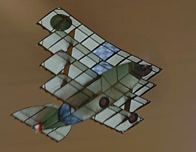
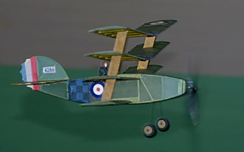

His first was last seen headed towards San Francisco
and rapidly gaining altitude in a clear blue sky.

The loss was not a fluke. A few months later, Jason's
original prototype escaped under similar circumstances.
Copyright 2001, Thayer Syme. All rights reserved